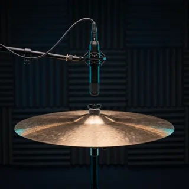
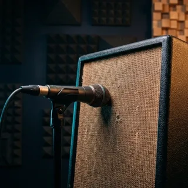

Configure Studio Capture Channels
Connect a multi-mic drum kit and run DrumSet AI Soundcheck to arm all Focusrite Analog + ADAT inputs simultaneously, play a short check, and auto-assign LV2/VST EQ, polarity, panning, and Drum Sound Replacement — or add individual channels anytime.